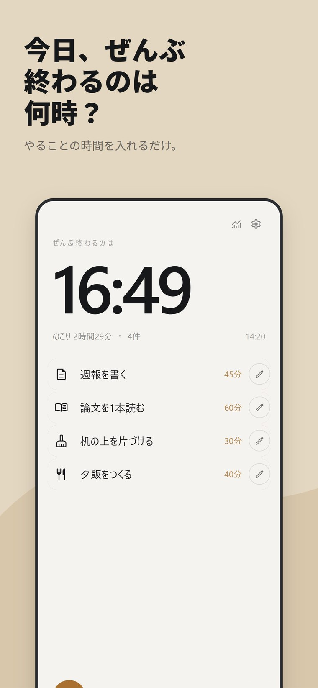

01
Fin
やることを、5分に割る
やることが多いときに動けなくなるのは、量が多いからではなく、
最初の一手が大きすぎるからだと思っています。
Fin は、ひとつのタスクを「いま5分でできること」まで分けます。
分けたら、そのうちのひとつだけを表示します。次の予定は見せません。
終わったら、また次を出します。
こういう方に
- リストが長くなると、開かなくなる
- 「あとでやる」が積み上がっている
- 始めさえすれば、進むほうだ
